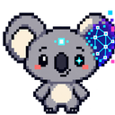
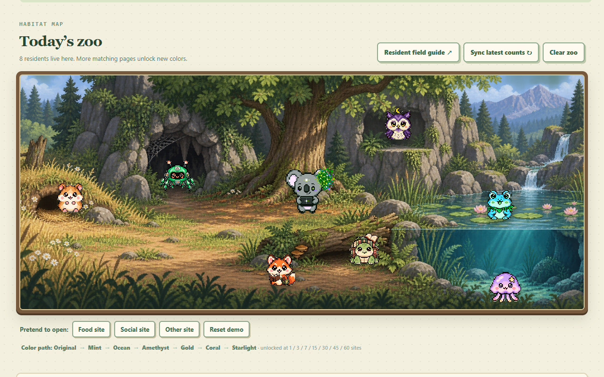
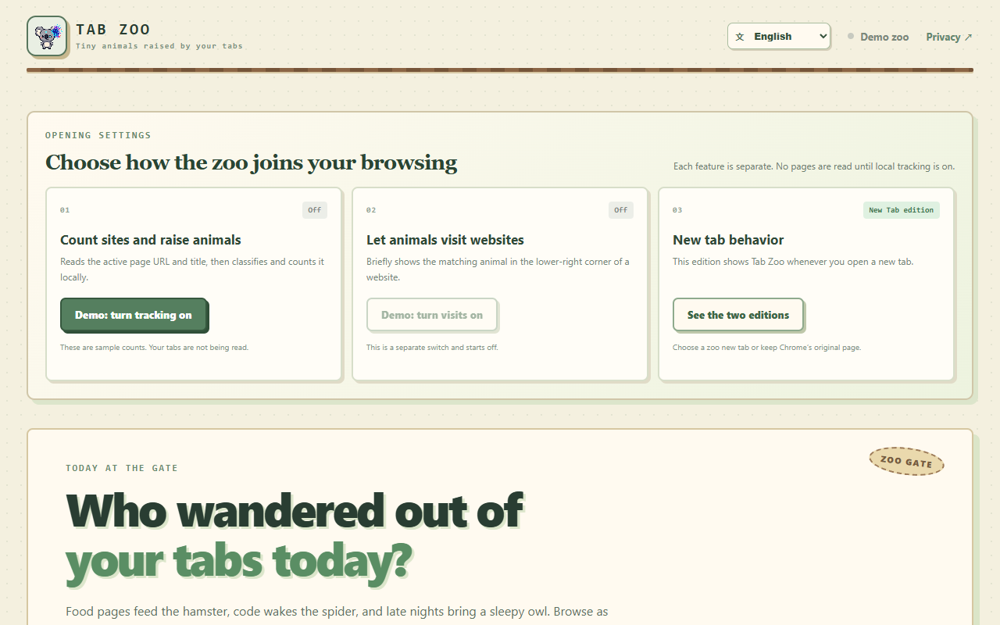
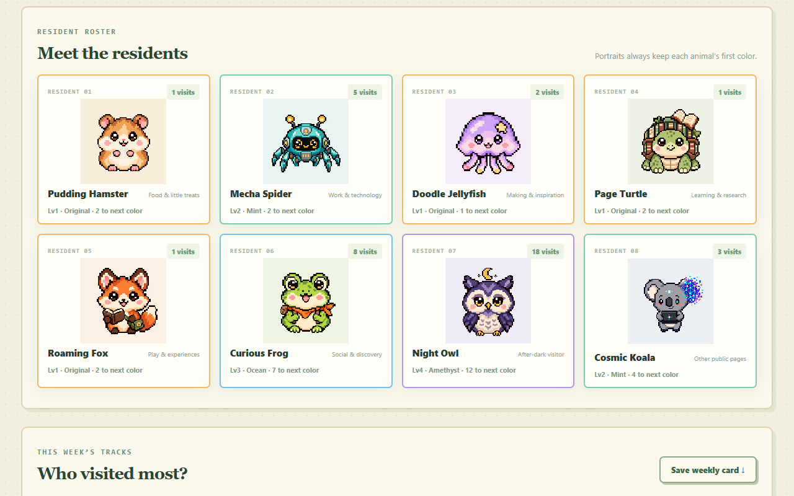

Choose your experience
Use the zoo as your new-tab page, the toolbar popup, or both.

TAB ZOOTiny animals raised by your tabs.A PRIVACY-FIRST CHROME EXTENSION
Tab Zoo turns the new-tab page into a calm pixel habitat. Browse the web, meet eight residents and watch their colors evolve.

HOW IT WORKS
Tab Zoo counts broader websites once per reset period. Pages from the same main site help the same resident, while a different site creates a new visit.
Use the zoo as your new-tab page, the toolbar popup, or both.
Tracking begins only after you turn it on. You can pause it at any time.
Visits unlock new colors across your eight pixel residents.
THE HABITAT
Your animals share a hand-built pixel landscape, with each resident placed in a home that fits its character.


MEET THE RESIDENTS
From the Pudding Hamster to the Cosmic Koala, every animal represents a browsing category and keeps its first unlocked color in the roster.
PRIVATE BY DESIGN
Your animal progress stays in the current Chrome profile. Tab Zoo has no account, backend, advertising, analytics or remote code.
WELCOME TO TAB ZOO